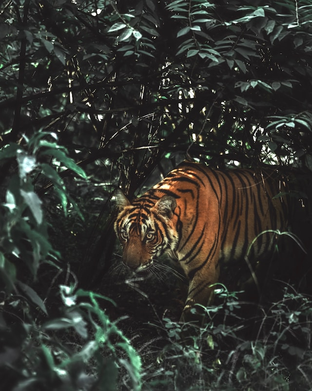

Animais Fantásticos
-

-

-

-

-

-

- 
Raposa
Raposas são pequenos a médios mamíferos onívoros pertencentes a vários gêneros da família Canidae. As raposas têm o crânio achatado, orelhas triangulares verticais, focinho pontiagudo e ligeiramente arrebitado e uma cauda longa e espessa.
Doze espécies pertencem ao grupo monofilético de "raposas verdadeiras" do gênero Vulpes. Aproximadamente outras 25 espécies atuais ou extintas são parte do grupo parafilético das raposas sul-americanas ou do grupo periférico, que consiste na raposa-orelhas-de-morcego, raposa-cinzenta e raposa-das-ilhas.
As raposas vivem em todos os continentes, exceto a Antártida. De longe, a espécie mais comum e difundida de raposa é a raposa vermelha (Vulpes vulpes) com cerca de 47 subespécies reconhecidas. A distribuição global das raposas, juntamente com sua ampla reputação de astúcia, contribuíram para sua proeminência na cultura popular e no folclore em muitas sociedades ao redor do mundo. A caça à raposa com matilhas de cães, há muito uma atividade estabelecida na Europa, especialmente nas Ilhas Britânicas, foi exportada por colonos europeus para várias partes do Novo Mundo.
Esquilo
Os esquilos pertencem a uma grande família de mamíferos roedores, de pequeno e médio porte, conhecida como Sciuridae. No Brasil, são também conhecidos como serelepe, caxinguelê, caxinxe, quatimirim, quatipuru, agutipuru ou acutipuru. Na Galiza e em algumas zonas de Portugal, também são conhecido por esquio.
Os esquilos estão espalhados por quase todo o mundo, a maioria nas zonas de climas temperado ou tropical, mas também em algumas zonas de clima frio. Como todos os roedores, possuem presas fortíssimas, com que roem facilmente sementes, principalmente bolotas.
Urso
Os Ursos (latim científico: Ursidae) constituem uma família de mamíferos carnívoros de grande porte, contendo os ursos e os pandas. Eles são classificados como caníformes ou carnivoros caninos. Os ursos são encontrados nos continentes da América do Norte, América do Sul, Europa e Ásia. As características comuns dos ursos modernos incluem corpos grandes com pernas atarracadas, focinhos longos, orelhas pequenas e arredondadas, cabelos desgrenhados, patas plantígradas com cinco garras não retráteis e caudas curtas.
Enquanto o urso polar é principalmente carnívoro (tanto predador quanto carniceiro), e o panda gigante se alimenta quase inteiramente de bambu , as seis espécies restantes são onívoras com dietas variadas, incluindo aves, reptéis, anfíbios, mariposas, larvas, frutas, frutas silvestres, legumes, mel, peixes, carniça, invertebrados, pequenos roedores, focas e grandes animais como cavalos, vacas, porcos, bodes, antílopes e cervos como os alces e renas, além de restos de alimentos que são encontrados em piqueniques ou em lixos, como fazem os gatos, guaxinins, cães de rua e cães ferais.
Os ursos são animais tipicamente solitários e, exceto quando estão a procura de um parceiro para acasalar ou mães acompanhando seus filhotes, passam a vida toda sozinhos. Eles podem ter comportamentos diurnos ou noturnos e têm um excelente olfato. Apesar de sua constituição pesada e marcha desajeitada, eles são corredores, alpinistas e nadadores hábeis. Os ursos usam abrigos como cavernas e troncos, ou constroem suas tocas; a maioria das espécies ocupam suas tocas durante o inverno por um longo período de hibernação, até 100 dias. A maioria dos ursos costumam preparar-se para hibernar durante o verão, comendo grandes quantidades de comida antes de entrar em uma toca para o período de sono profundo durante todo o inverno.
Os ursos são caçados desde os tempos pré-históricos tanto por sua carne e pelo; quanto para serem usados para iscas de urso ou outras formas de entretenimento, como serem obrigados a dançar. Com sua poderosa presença física, eles desempenham um papel proeminente nas artes , na mitologia e em outros aspectos culturais de várias sociedades humanas. Nos tempos modernos, os ursos estão sob pressão devido à invasão de seus habitats e ao comércio ilegal de partes de ursos, incluindo o mercado asiático de ursos biliares. Com exceção do urso-pardo, que não corre risco de extinção, e do urso-polar que é classificado como pouco preocupante, a IUCN listou seis espécies de ursos como vulneráveis ou ameaçadas de extinção devido a caça ilegal. A caça furtiva e o comércio internacional dessas populações mais ameaçadas são proibidos, porém ainda ocorrem de forma ilegal.
Lobo
Lobo é um animal carnívoro da família dos canídeos e que pertence ao gênero Canis. São três espécies que recebem tal designação: o lobo-cinzento (Canis lupus), lobo-etíope (Canis simensis) e o lobo-dourado-africano (Canis lupaster). O lobo-oriental (Canis lycaon) e o lobo-vermelho (Canis rufus), possuem classificações discutíveis se espécies em si, subespécies do lobo-cinzento, ou híbridos de lobo com coiote (coylobo).
Existem outros animais comumente referidos como "lobos" mas pertencem a outros gêneros ou outras classificações de mamíferos: lobo-da-terra (uma hiena), Lobo-terrível (um Canídeo extinto distinto), Mabeco (em alguns locais chamado lobo pintado), lobo-da-tasmânia (um marsupial), lobo-marinho (um pinípede), lobo-guará (um canídeo pouco aparentado). Também sem relação, outras espécies que, às vezes, são chamadas de "lobo" são: cão-selvagem-asiático (em certos locais chamado lobo-da-montanha), hiena-malhada (lobo-tigre), chacal-dourado (lobo-da-cana), coiote (lobo do mato) e o graxaim-do-mato (chamado variavelmente de lobinho, lobete ou só de lobo).
Macaco
Macaco é um termo de origem africana (provavelmente do banto makako) utilizado como designação comum a todas as espécies de símios ou primatas antropoides. É aplicada restritivamente no Brasil aos cebídeos (ou macacos do Novo Mundo) em geral. No sentido estrito, "macaco" refere-se às espécies de primatas pertencentes ao género Macaca.
A designação mico se origina, segundo o Dicionário Aurélio, do caraíba (karib) continental. É bastante usada no Brasil, onde costuma aplicar-se às espécies do gênero Cebus, no Sul, e às espécies de pequeno porte, ou saguis, no Norte.
As raposas vivem em todos os continentes, exceto a Antártida. De longe, a espécie mais comum e difundida de raposa é a raposa vermelha (Vulpes vulpes) com cerca de 47 subespécies reconhecidas. A distribuição global das raposas, juntamente com sua ampla reputação de astúcia, contribuíram para sua proeminência na cultura popular e no folclore em muitas sociedades ao redor do mundo. A caça à raposa com matilhas de cães, há muito uma atividade estabelecida na Europa, especialmente nas Ilhas Britânicas, foi exportada por colonos europeus para várias partes do Novo Mundo.
O termo sagui se origina do tupi antigo sagûi e também designa os macacos calitriquídeos de pequeno porte.
Ainda segundo Cunha, o termo símio, que também designa os macacos (tendo sido registrado no português dos séculos XVI e XVII), vem do latim simius, de simus, "que tem o nariz chato".
Leão
O leão [feminino: leoa] (nome científico: Panthera leo) é uma espécie de mamífero carnívoro do gênero Panthera e da família Felidae. A espécie é atualmente encontrada na África subsaariana e na Ásia, com uma única população remanescente em perigo, no Parque Nacional da Floresta de Gir, Gujarat, Índia. Foi extinto na África do Norte e no Sudoeste Asiático em tempos históricos, e até o Pleistoceno Superior, há cerca de 10 000 anos, era o mais difundido grande mamífero terrestre depois dos humanos, sendo encontrado na maior parte da África, em muito da Eurásia, da Europa Ocidental à Índia, e na América, do Yukon ao México. É um dos quatro grandes felinos, com alguns machos excedendo 250 quilogramas em peso, sendo o segundo maior felino recente depois do tigre.
Existem outros animais comumente referidos como "leão" mas pertencem a outros gêneros ou outras classificações de mamíferos, plantas ou criaturas de mitos e lendas: leão marinho (um pinípede), Leão marsupial (um marsupial), leão da Nemeia (uma criatura da mitologia grega), Mico leão (um primata), dente de leão (Uma Flor). Também sem relação, outras espécies de animais, plantas e criaturas que, às vezes, são chamadas de "leão" são: Onça parda (conhecido em algumas regiões como leão da montanha ou onça parda) Leão de judá, quimera (metade mulher, metade leão, metade cobra, metade bode, metade dragão), Mantícora (corpo de leão, asas de dragão ou morcego, dentes de tubarão e cauda de escorpião) e a boca de leão.
A pelagem é unicolor de coloração castanha, e os machos apresentam uma juba característica. Uma das características mais marcantes da espécie é a presença de um tufo de pelos pretos na cauda, que também possui uma espora. Habita preferencialmente as savanas e pastagens abertas, mas pode ser encontrado em regiões mais arbustivas. É um animal sociável que vive em grupos que consiste das leoas e suas crias, o macho dominante e alguns machos jovens que ainda não alcançaram a maturidade sexual. A dieta consiste principalmente de grandes ungulados e possuem hábitos noturnos e crepusculares, descansando e dormindo na maior parte do dia. Leões vivem por volta de 10-14 anos na natureza, enquanto em cativeiro eles podem viver por até 30 anos. Alguns animais desenvolveram o hábito de atacar e devorar humanos, ficando conhecidos como "devoradores de homens".
A espécie está classificada como vulnerável pela União Internacional para a Conservação da Natureza e dos Recursos Naturais (IUCN), e sofreu um declínio populacional de 30-50% nas últimas duas décadas no território africano. Na Ásia, o leão está confinado a uma única área protegida e sua população é estável, mas está classificado como em perigo, já que a população não passa de 350 animais. Entre as ameaças, a perda de habitat e os conflitos com humanos são as principais razões de preocupação na sua conservação. Por centenas de anos, o leão tem sido usado como símbolo de bravura e nobreza em diversas civilizações e culturas da Europa, Ásia e África. Está amplamente representado em esculturas, pinturas, bandeiras nacionais, brasões, e em filmes e na literatura contemporâneos.
Tigre
O tigre [feminino: tigresa] (nome científico: Panthera tigris) é um mamífero carnívoro da família dos felídeos, que habita o continente asiático. Dentre suas subespécies é o maior entre todos os felinos selvagens do mundo. São animais extremamente territoriais e solitários. Classificado como um superpredador em seu ecossistema respectivo, o tigre é tido como o terceiro maior carnívoro terrestre da contemporaneidade, excedido em porte unicamente pelo urso-polar e pelo urso-pardo.
É o felino com maior variação de tamanho do mundo entre subespécies, com o tigre-de-bengala alcançando até 280 kg enquanto o tigre-de-bali alcançava no máximo 100 kg; tamanho comparável a suçuaranas e leopardos. Algumas estimativas sugerem que existem menos de 2500 indivíduos reprodutores maduros, com nenhuma subpopulação com mais de 250 indivíduos reprodutores maduros. A população era estimada em 100 000 indivíduos no início do século XX. Em tempos atuais, entretanto, apenas cerca de 4 000 indivíduos sobrevivem, uma queda de 97%.
Tigres já foram encontrados da Turquia à Sibéria e da ilha de Java à Índia. Hoje em dia estão restritos principalmente a algumas regiões do Sudeste Asiático, Sibéria e Índia. Três das subespécies estão extintas: o tigre-do-cáspio (encontrado em certas regiões da antiga União Soviética, Turquia, Oriente Médio, Afeganistão e Mongólia), tigre-de-java (encontrado em Java) e tigre-de-bali (que era encontrado apenas em Bali).
É um dos animais mais carismáticos do mundo, sendo símbolo da conservação da natureza e um dos animais mais populares. É o animal símbolo de diversos países da Ásia e mascote de diversas empresas em todo o mundo.